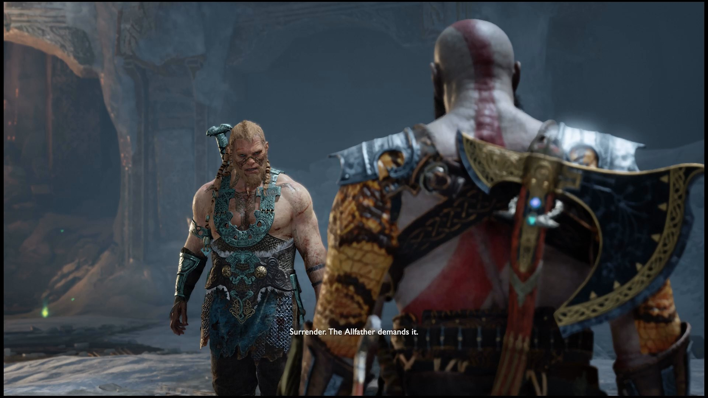

Atreus
A história começa com Atreus que parece estar ajudando Kratos a coletar árvores para o funeral de Faye, testemunhando seu pai cortando a última com a marca da mão de sua mãe. Os dois voltam ao barco com o tronco e vão para casa para queimar o corpo de Faye em cinzas e levá-los ao pico mais alto dos reinos. Atreus diz suas orações finais,
e pega a faca de sua mãe apesar de queimar sua mão devido às chamas. Kratos diz a Atreus que eles estão caçando veados e vão para a floresta para caçar para ver se ele estava pronto.
Atreus se assusta com o cervo, e acidentalmente dispara sua flecha, fazendo com que o animal fuja e fique em guarda. Kratos grita com seu filho,
mas se acalma para continuar caçando o veado sem seu arco. Eventualmente encontrando o cervo, Atreus atira no animal, e tem que dar o golpe final com a ajuda de Kratos. Os dois são atacados por um Troll, e Atreus ajuda seu pai na batalha, terminando com o último matando o troll com um estalo no pescoço. Atreus deixa sua raiva no monstro,
cortando-o com a faca de sua mãe enquanto insultava o cadáver. Kratos o impede, mas afirma que Atreus não está pronto para sua jornada, irritando a criança.
Em casa, Atreus é desafiado por seu pai em sua raiva, mas um estranho bate na porta, fazendo com que a criança tenha que se esconder enquanto Kratos lida com isso.
Atreus ouve uma briga entre Kratos e o estranho, e fica surpreso ao ver seu pai retornar, apesar de ouvir a destruição.
 Vendo que sua casa não era mais segura, Kratos e Atreus decidiram seguir viagem apesar da criança não estar pronta e de sua doença. Ao subir a montanha no River Pass,
Atreus percebe que sua casa foi protegida por árvores mágicas, e que Kratos a quebrou ao cortá-las. Depois de lidar com Dragur, Revenants e Hel-Walkers (que eram humanos que Kratos matou momentos antes), os dois conhecem Brok, um anão que co-criou Leviatã (machado de Kratos). Durante a viagem, eles encontram um javali,
mas Atreus percebe que é mágico e engrossou a pele. Ele fere com sucesso o javali, mas corre em uma névoa quando Kratos pega sua faca que ele deixou cair antes. Atreus alcança o javali, mas encontra uma mulher que afirma que o javali era seu amigo. Kratos se encontra com os dois e ajuda a Bruxa a levar sua amiga para sua casa, que é Chaurli.
uma tartaruga gigante. Depois de ajudar a curar o animal, a Bruxa mostra-lhes uma passagem secreta para chegar ao Lago dos Nove.
Vendo que sua casa não era mais segura, Kratos e Atreus decidiram seguir viagem apesar da criança não estar pronta e de sua doença. Ao subir a montanha no River Pass,
Atreus percebe que sua casa foi protegida por árvores mágicas, e que Kratos a quebrou ao cortá-las. Depois de lidar com Dragur, Revenants e Hel-Walkers (que eram humanos que Kratos matou momentos antes), os dois conhecem Brok, um anão que co-criou Leviatã (machado de Kratos). Durante a viagem, eles encontram um javali,
mas Atreus percebe que é mágico e engrossou a pele. Ele fere com sucesso o javali, mas corre em uma névoa quando Kratos pega sua faca que ele deixou cair antes. Atreus alcança o javali, mas encontra uma mulher que afirma que o javali era seu amigo. Kratos se encontra com os dois e ajuda a Bruxa a levar sua amiga para sua casa, que é Chaurli.
uma tartaruga gigante. Depois de ajudar a curar o animal, a Bruxa mostra-lhes uma passagem secreta para chegar ao Lago dos Nove.
 No lago, os dois invocam Jörmungandr, a serpente do mundo que baixa a água para levá-los à terra. Os dois passam por uma das torres do reino e encontram Sindri, irmão de Brok, no Foothills,
e ele atualiza o machado depois de saber da morte de Faye. Chegando à montanha, a dupla se vê incapaz de passar pela boca devido ao Sopro Negro, poder de magia negra que a Bruxa da Floresta não pode quebrar. Ela os leva para o Bifrost, e Kratos ativa a máquina para Alfheim, o reino dos Elfos. Ao entrar no reino,
a Bruxa percebe que a luz se foi e ordena que eles consertem o problema antes de serem enviados de volta para Midgard.
No lago, os dois invocam Jörmungandr, a serpente do mundo que baixa a água para levá-los à terra. Os dois passam por uma das torres do reino e encontram Sindri, irmão de Brok, no Foothills,
e ele atualiza o machado depois de saber da morte de Faye. Chegando à montanha, a dupla se vê incapaz de passar pela boca devido ao Sopro Negro, poder de magia negra que a Bruxa da Floresta não pode quebrar. Ela os leva para o Bifrost, e Kratos ativa a máquina para Alfheim, o reino dos Elfos. Ao entrar no reino,
a Bruxa percebe que a luz se foi e ordena que eles consertem o problema antes de serem enviados de volta para Midgard.
O pai e o filho logo entram em uma batalha contra os Elfos Negros, que venceram a guerra contra os Elfos da Luz e estão assumindo a luz. Atreus começa a ouvir vozes pedindo ajuda, e acredita que ouviu Faye no meio,
mas Kratos rejeita a ideia. Depois de se livrar das raízes sobre a luz, Kratos entra enquanto Atreus espera com o machado de seu pai. De acordo com Atreus, Kratos estava na luz por um longo tempo, e ele teve que lutar contra incontáveis ondas de Elfos Negros até que ele agarrou seu pai. Apesar de estar irritado por acreditar que Kratos não se importava com ele,
Atreus ganha a habilidade de atirar flechas leves da corda do arco de Faye e derrota o chefe Dark Elf Svartáljǫfurr. Atreus fica frustrado com seu pai, acreditando não se importar com ele ou Faye, e precisando apenas de tarefas simples. Kratos revela que está sofrendo de luto, mas de forma diferente, e descobre que para seu pai,
momentos passam enquanto na luz.
 Voltando a Midgard, eles expulsam o Sopro Negro e continuam sua jornada até o pico mais alto da montanha. Os dois são atacados pelo dragão Hræzlyr nas minas, com o resultado indo para fora, onde Sindri é atacado. Atreus implora a seu pai que ajude Sindri,
e os dois são capazes de derrotar o dragão usando a seiva e o guindaste. Sindri agradece aos dois incorporando a corda do arco de Atreus com o dente do dragão, e recebe flechas de visco. No caminho para o topo, Kratos para Atreus e coloca uma flecha de ponta de visco em sua alça, e ouve o estranho conversando com um homem.
Atreus identifica o estranho como Baldur, que está com seus sobrinhos Magni e Modi, e conhece Mimir, o homem mais inteligente vivo. Mimir revela à dupla que o pico mais alto de todos os reinos está em Jötunheim, e afirma que irá ajudá-los. Mas primeiro,
Mimir diz a Kratos para cortar sua cabeça (já que os galhos não podem ser danificados pelo próprio Mjolnir), e levar sua cabeça para a bruxa para que ela possa revivê-lo.
Levando-o para a Bruxa, mas ela ordena que Atreus se livre das flechas de visco, chamando-as de "más". Ela então ordena que ele destrua tudo o que encontrar,
e então revive Mimir antes de cuspir em seu rosto. Mimir revela que a bruxa é Freya, a ex-rainha dos Vanir, o que irrita Kratos (já que ela não contou isso antes).
Voltando a Midgard, eles expulsam o Sopro Negro e continuam sua jornada até o pico mais alto da montanha. Os dois são atacados pelo dragão Hræzlyr nas minas, com o resultado indo para fora, onde Sindri é atacado. Atreus implora a seu pai que ajude Sindri,
e os dois são capazes de derrotar o dragão usando a seiva e o guindaste. Sindri agradece aos dois incorporando a corda do arco de Atreus com o dente do dragão, e recebe flechas de visco. No caminho para o topo, Kratos para Atreus e coloca uma flecha de ponta de visco em sua alça, e ouve o estranho conversando com um homem.
Atreus identifica o estranho como Baldur, que está com seus sobrinhos Magni e Modi, e conhece Mimir, o homem mais inteligente vivo. Mimir revela à dupla que o pico mais alto de todos os reinos está em Jötunheim, e afirma que irá ajudá-los. Mas primeiro,
Mimir diz a Kratos para cortar sua cabeça (já que os galhos não podem ser danificados pelo próprio Mjolnir), e levar sua cabeça para a bruxa para que ela possa revivê-lo.
Levando-o para a Bruxa, mas ela ordena que Atreus se livre das flechas de visco, chamando-as de "más". Ela então ordena que ele destrua tudo o que encontrar,
e então revive Mimir antes de cuspir em seu rosto. Mimir revela que a bruxa é Freya, a ex-rainha dos Vanir, o que irrita Kratos (já que ela não contou isso antes).
 Os dois pediram informações sobre como chegar a Jötunheim, e Mimir afirma que eles têm que perguntar à serpente do mundo, e ele pode falar sua língua morta.
Depois de falar com a serpente, Mimir diz a eles que eles precisam pegar o cinzel de Thamur, que pode abrir as portas de fechadura que encontraram. Alcançando o cadáver de Thamur, Kratos destruiu com sucesso o gelo acima do cinzel, e os dois são confrontados por Magni e Modi. Os dois derrotam os irmãos, e Kratos mata Magni para impedir que Modi machuque Atreus, chocando o Deus. Atreus atira flechas em Modi enquanto ele foge, fazendo com que sua febre volte quando ele estava ficando com raiva dos insultos do Deus nórdico sobre sua mãe.
Os dois pediram informações sobre como chegar a Jötunheim, e Mimir afirma que eles têm que perguntar à serpente do mundo, e ele pode falar sua língua morta.
Depois de falar com a serpente, Mimir diz a eles que eles precisam pegar o cinzel de Thamur, que pode abrir as portas de fechadura que encontraram. Alcançando o cadáver de Thamur, Kratos destruiu com sucesso o gelo acima do cinzel, e os dois são confrontados por Magni e Modi. Os dois derrotam os irmãos, e Kratos mata Magni para impedir que Modi machuque Atreus, chocando o Deus. Atreus atira flechas em Modi enquanto ele foge, fazendo com que sua febre volte quando ele estava ficando com raiva dos insultos do Deus nórdico sobre sua mãe.

Depois de pegar o cinzel, Mimir diz a eles para irem ao cofre de Tyr, mas são emboscados por Modi antes que pudessem descer da área. Os Deuses Nórdicos chocam Kratos com iluminação,
como Atreus fica bravo com os insultos de Modi. Atreus solta sua raiva espartana, mas entra em coma, enquanto Kratos bate no covarde Modi. Mimir sugere que Kratos o leve para Freya, e ela afirma que o lado deus de Atreus está lutando com seu lado mortal (já que ele não sabe de sua divindade).
Ela instrui Kratos a ir a Helheim para coletar o coração do guardião da noiva, mas afirma que ele não terá armas nórdicas, pois seu machado será inútil nos mortos. Kratos volta para casa e coleta as Blades of Chaos, e mata o guardião da ponte enquanto recebe a ajuda de Brok para sair de Hel.
Depois de reviver Atreus,
ele permanece quieto até ser questionado por seu pai. Ele revela que está amaldiçoado e acredita que Kratos não o quer, mas é informado de que ele é um deus ao lado de seu pai. Depois de saber de sua divindade, Atreus se torna arrogante, arrogante e imprudente, gabando-se de que eles podem fazer o que quiserem. Depois de sair do templo de Tyr com a runa,
Atreus torna-se mais arrogante, gritando com Sindri por falar constantemente do irmão; referindo-se a eles como "pequenos problemas". Além disso, Atreus começa a atacar os inimigos contra as ordens de seu pai, e até inicia uma luta contra o Ancião do Gelo. Seu ato notável é matar um Modi espancado contra a vontade de seu pai,
fazendo com que os dois sejam hostis um com o outro. Ao chegar à montanha, eles abrem o portão para Jötunheim, mas são atacados por Baldur. Atreus atira em seu pai com uma flecha de choque, acreditando estar pronto para lutar contra o deus nórdico da luz, mas é agarrado e levado. Kratos salva com sucesso Atreus de Baldur,
mas ao custo de enviar os três para a parte mais baixa de Helheim.
Kratos repreende Atreus por seu comportamento e ações, e afirma que a conversa estava longe de terminar. Ao passar por Hel, Atreus se vê matando Modi, apesar de dizer que não era ele.
Os dois também veem Baldur assistir seu passado discutindo contra sua mãe Freya por lançar o feitiço que o tornou invulnerável. Enquanto andava de barco, Atreus vê seu pai lutar com um homem, e depois afirma que não viu o fantasma. Depois de escapar de Hel,
o trio descobre que Tyr havia secretamente colocado a torre Jötunheim no reino entre os reinos e a devolveu para Midgard. Uma vez entrando na Bifrost, eles percebem que a torre não tem cristal e precisarão dos dois olhos de Mimir para entrar na terra dos gigantes. Indo para os anões,
eles descobrem que o olho estava na estátua que a serpente do mundo comeu antes. Mimir fala com Jörmungandr, e ele permite que eles entrem em seu estômago para coletar o olho, e o fazem antes de serem lançados inesperadamente.
Sendo devolvidos ao cadáver de Thamur, eles encontram Freya, que está procurando por seu filho (afirmando que a floresta fala dele em Midgard).
Baldur se revela, afirmando que sabia que perturbar a cobra os colocaria em campo aberto. Depois de ver sua mãe, Baldur tenta atacá-la, mas Kratos e Atreus lutam contra ele. Quando pego nas plantas de Freya, Atreus protege seu pai de Baldur, que dá um soco no peito da criança. O visco na alça de Atreus quebra a maldição de Baldur,
fazendo com que Freya controle Thamur e envie o grupo para o outro lado da terra. Atreus e Kratos continuam sua luta contra Baldur, e derrotam ele e Freya com a ajuda de Jörmungandr. Atreus lembra seu pai que ele foi espancado e sai até Baldur começar a sufocar Freya. Kratos mata Baldur,
fazendo Freya jurar vingança apesar de Atreus afirmar que salvou sua vida. Atreus então descobre que Kratos veio de Esparta e admite que ele entregou sua vida a um deus e matou seu pai Zeus. Atreus responde revelando que viu o fantasma em Hel, e questiona que ser um deus é matar mães e pais.
Depois que Kratos reconcilia essa crença de que eles podem ser melhores, os dois retornam ao Bifrost e abrem o portão para Jötunheim. Mimir fica para trás com os anões enquanto os dois caminham pela terra, descobrindo que o lugar está morto e só restam os santuários. Atreus toca uma parede, o que revela que Faye era um gigante,
e planejou toda a jornada com outros santuários mostrando a dupla lutando contra Baldur, e fazendo o pedreiro. Chegando ao topo do pico, os dois espalham as cinzas de Faye, mas Atreus questiona por que os santuários o chamavam de "Loki", e descobre que sua mãe queria chamá-lo assim. Voltando ao Bifrost,
os dois descobrem que o Fimbulwinter começou, neve constante por três verões que dará início ao Ragnarok. Além disso, Mimir revela que Freya veio até ele para descobrir onde Odin guardava suas asas de Valquíria e afirma que o ciclo de vingança continuará. Após a viagem, o trio volta para casa e descansa,
com Atreus afirmando que ele está dormindo durante o inverno.
Ele então tem uma visão dele, Kratos e Mimir sendo confrontados por Thor, o deus do Trovão. Acordando nos dias atuais, e avisa seu pai sobre o sonho, mas Kratos afirma que eles vão esperar amanhã e treinar hoje. Se o jogo estiver 100%, Atreus e Kratos irão para os outros reinos, liberando três dragões
, e salve as Valquírias da corrupção de Odin, e derrote a Sigrun, a Rainha das Valquírias.